Supplementary material: data for parmest tutorial
Contents
2.10. Supplementary material: data for parmest tutorial#
Created by Kanishka Ghosh, Jialu Wang, and Prof. Alex Dowling at the University of Notre Dame.
import numpy as np
import matplotlib.pyplot as plt
import pandas as pd
from pyomo.environ import *
# Define the directory to save/read the data files
data_dir = 'https://raw.githubusercontent.com/ndcbe/optimization/main/notebooks/data/parmest_tutorial/'
The purpose of this notebook is to generate data files used for the parmest tutorial.
2.10.1. Reaction Kinetics Example#
The following code calculates the concentrations \(C_A\), \(C_B\), and \(C_C\) as a function of time for experimental conditions \(T\) and \(C_{A0}\) given model parameters \(A_1\), \(A_2\), \(E_1\), and \(E_2\). See the parmest tutorial notebook for a full description of the mathematical model.
def kinetics(A, E, T):
''' Computes kinetics from Arrhenius equation
Arguments:
A: pre-exponential factor, [1 / hr]
E: activation energy, [kJ / mol]
T: temperature, [K]
Returns:
k: reaction rate coefficient, [1 / hr]
'''
R = 8.31446261815324 # J / K / mole
return A * np.exp(-E*1000/(R*T))
def concentrations(t,k,CA0):
'''
Returns concentrations at time t
Arguments:
t: time, [hr]
k: reaction rate coefficient, [1 / hr]
CA0: initial concentration of A, [mol / L]
Returns:
CA, CB, CC: concentrations of A, B, and C at time t, [mol / L]
'''
CA = CA0 * np.exp(-k[0]*t);
CB = k[0]*CA0/(k[1]-k[0]) * (np.exp(-k[0]*t) - np.exp(-k[1]*t));
CC = CA0 - CA - CB;
return CA, CB, CC
CA0 = 1 # Moles/L
k = [3, 0.7] # 1/hr
t = np.linspace(0,1,51)
CA, CB, CC = concentrations(t,k,CA0)
plt.plot(t, CA, label="$C_{A}$",linestyle="-",color="blue")
plt.plot(t, CB, label="$C_{B}$",linestyle="-.",color="green")
plt.plot(t, CC, label="$C_{C}$",linestyle="--",color="red")
plt.xlabel("Time [hours]")
plt.ylabel("Concentration [mol/L]")
plt.title("Batch Reactor Model")
plt.legend()
plt.show()
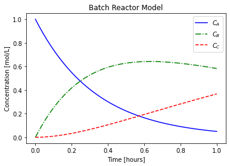
2.10.1.1. Simulating experimental data#
We start by simulating experiments in the batch reactor. Here is the experimental procedure:
Specify the reaction temperature
Load the reactor with species \(A\) concentration of \(C_{A0}\) mol/L at time \(t=0\).
Measure the concentrations \(C_A\), \(C_B\), and \(C_C\) at times 0.0, 0.125, 0.25, 0.375, 0.5, 0.625, 0.75, 0.875, and 1.0 hours. These experiments are subject to measurement uncertainty.
Below is Python code to generate data for these simulated experiments.
## General setup
# declare "true" model parameters
A = np.array([200, 400]) # 1/hr
E = np.array([10, 15]) # KJ/mol
# declare time for parameter estimation
t_est = np.array([0.0, 0.125, 0.25, 0.375,0.5,0.625, 0.75, 0.875, 1.0])
n = len(t_est)
# declare measurement uncertainty
stdev_m_error = 0.1
# define function to plot
def plot_exp(k, CA0, data, text):
'''
Plot concentration profiles
Arguments:
k: kinetic parameters
CA0: initial concentration
data: Pandas data frame
text: plot title
'''
# evaluate models
t = np.linspace(0,1,51)
CA, CB, CC = concentrations(t,k,CA0)
# plot model-generated and 'experimental' data
# symbols for 'experimental' data
# solid and dashed lines for model-generated data
plt.plot(t, CA,label="$C_{A}$",linestyle="-",color="blue")
plt.plot(data.time, data.CA, marker='o',linestyle="",color="blue",label=str())
plt.plot(t, CB, label="$C_{B}$",linestyle="-.",color="green")
plt.plot(data.time, data.CB, marker='s',linestyle="",color="green",label=str())
plt.plot(t, CC, label="$C_{C}$",linestyle="--",color="red")
plt.plot(data.time, data.CC, marker='^',linestyle="",color="red",label=str())
plt.xlabel("Time [hours]")
plt.ylabel("Concentration [mol/L]")
plt.title(text)
plt.legend()
plt.show()
# define function to accept set of T and C_A0 values as input and generate true parameters and data with noise
def gen_data(T_vals,CA0_vals,t_est,std_error,n):
'''
function to accept set of T and C_A0 values as input and generate and store data with noise to csv files
Arguments:
T_vals: list of temperature, K
CA0_vals: list of inlet concentrations of A, mol/L
t_est: time steps for experiment, hrs
std_error: uncertainty added to data
n: number of data points = length of t_est
Return:
filename_list: list of filenames
'''
filename_list = []
# experiment number counter
counter = 0
for T in T_vals:
for CA0 in CA0_vals:
counter += 1
# define "true" kinetic parameters at this temperature
k = kinetics(A, E, T)
# evaluate model to generate data
CA_exp, CB_exp, CC_exp = concentrations(t_est,k,CA0)
# add measurement error
# Note: adding random errors to concentration can result in negative concentrations
# To ensure the data seems realistic, we need to ignore negative concentration data points
CA_exp += np.random.normal(0, std_error, n)
CB_exp += np.random.normal(0, std_error, n)
CC_exp += np.random.normal(0, std_error, n)
for i,CA_exp_i in enumerate(CA_exp):
if CA_exp[i] < 0.0:
CA_exp[i] = 0.0
if CB_exp[i] < 0.0:
CB_exp[i] = 0.0
if CC_exp[i] < 0.0:
CC_exp[i] = 0.0
# store dictionary of 'experimental' data in Pandas dataframe
data = pd.DataFrame({"time":t_est,"T":T,"CA0":CA0,"CA":CA_exp,"CB":CB_exp,"CC":CC_exp})
# generate filename to store data in
file_name = data_dir + '20210609_data_exp{}.csv'.format(counter)
# store data in csv file segregated by 'experiment' number
data.to_csv(file_name)
# adding file name to list of file names to be used later to read-in data from the csv files
filename_list.append(file_name)
# plot model-generated and 'experimental' data
# symbols for 'experimental' data
# solid and dashed lines for model-generated data
plot_exp(k, CA0, data, "Experiment {}: T = {} K and $C_{}$ = {} mol/L".format(counter,T,'A0',CA0))
return filename_list
2.10.1.2. Simulate data for multiple experiments#
Here, we define lists of temperatures and initial concentrations of A to be used to simulate multiple experimental datasets
# list of temperatures
T_vals = [250,300,350,400] # K
# list of initial concentrations of A
CA0_vals = [0.5,1.0,1.5,2.0] # mol/L
# generating 'experimental' data and storing list of filenames to be used to load data later
file_list = gen_data(T_vals,CA0_vals,t_est,stdev_m_error,n)
# creating a log file to store file names
log_file_name = data_dir + 'log_file.csv'
# create a pandas dataframe to store file names
file_list_df = pd.DataFrame.from_dict({'File name':file_list})
# save dataframe as a separate csv file
file_list_df.to_csv(log_file_name,index=False)
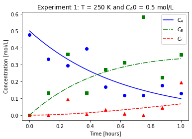
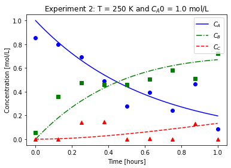
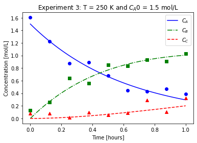
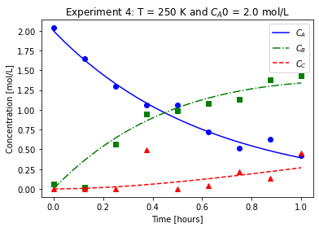
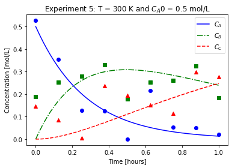
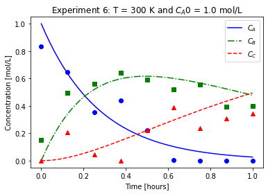
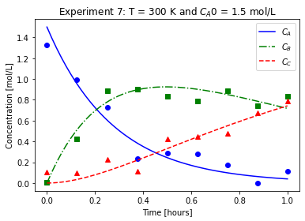
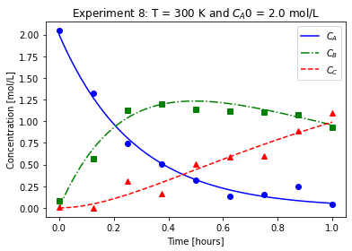
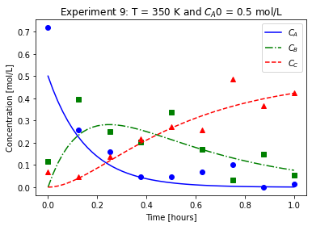
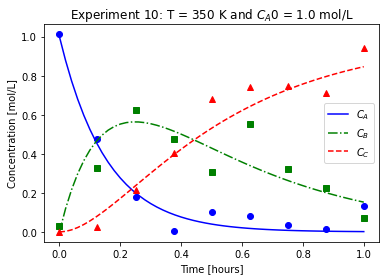
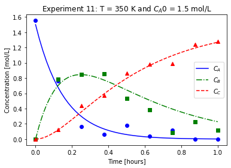
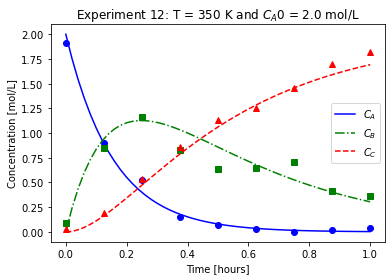
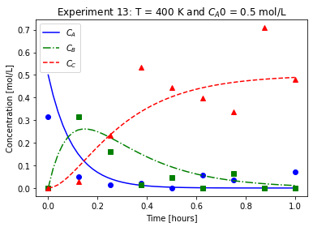
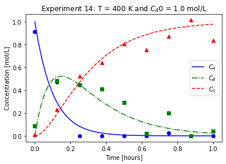
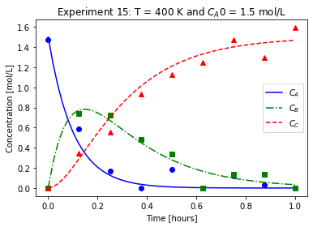
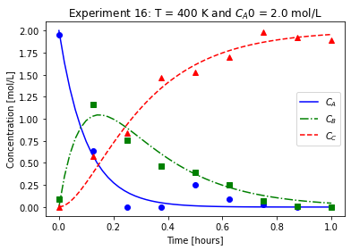
We will imagine these data came from laboratory experiments.